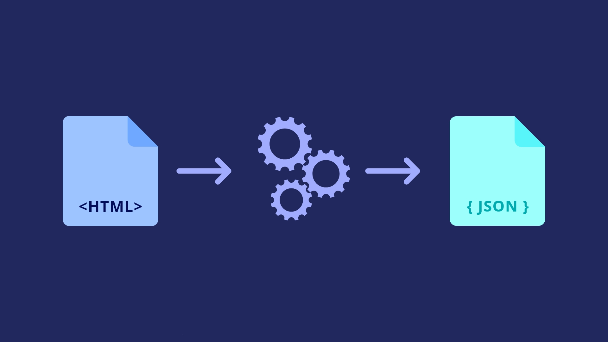

What's parsing?
Parsing refers to the process of analyzing a text or a sequence of symbols according to a set of rules or a formal grammar. It involves breaking down the input into its constituent parts, such as words, phrases, and sentences, and determining the underlying structure and relationships among these elements. Parsing plays a crucial role in natural language processing (NLP) and programming languages, as it enables the understanding and interpretation of text by machines.
Different approaches
There are several different approaches to parsing, each with its own techniques and algorithms. One common approach is constituency parsing, which aims to identify the hierarchical structure of a sentence by dividing it into constituent phrases or constituents. This method is often used in traditional rule-based parsing systems and relies on formal grammars such as context-free grammars. Another approach is dependency parsing, which focuses on the relationships between words in a sentence and represents them as directed links or dependencies. Dependency parsing has gained popularity in recent years due to its simplicity and efficiency, and it has been successfully applied to various NLP tasks, such as machine translation, information extraction, and sentiment analysis.
Parse with ParseCo
ParseCo is a parsing tool or library that facilitates the parsing process by providing a set of pre-built parsing functionalities and algorithms. It offers an intuitive and user-friendly interface for developers and researchers to parse texts effectively and efficiently. ParseCo may employ different parsing techniques, such as constituency or dependency parsing, depending on the specific requirements and objectives. With ParseCo, users can parse sentences or texts in various languages, enabling multilingual parsing capabilities. It may offer features such as syntactic analysis, part-of-speech tagging, and semantic role labeling, which further enhance the parsing process and enable deeper linguistic analysis. By leveraging ParseCo, developers can streamline their parsing tasks and focus on building applications that require accurate and robust language understanding.
Be aware!
When working with parsing, it's important to be aware of the following:
- Computational Intensity: Parsing can be resource-intensive, so optimizing algorithms and data structures is crucial for efficient performance.
- Parsing Accuracy: Different approaches have varying levels of accuracy, so evaluate and fine-tune your parsing system for the desired results.
- Linguistic Sensitivity: Parsing can be sensitive to language variations and complexities, so consider language-specific rules and resources to improve accuracy.
- Integration with NLP Pipeline: Parsing is just one part of a broader NLP system, so integrating it with other modules can enhance overall language understanding capabilities.